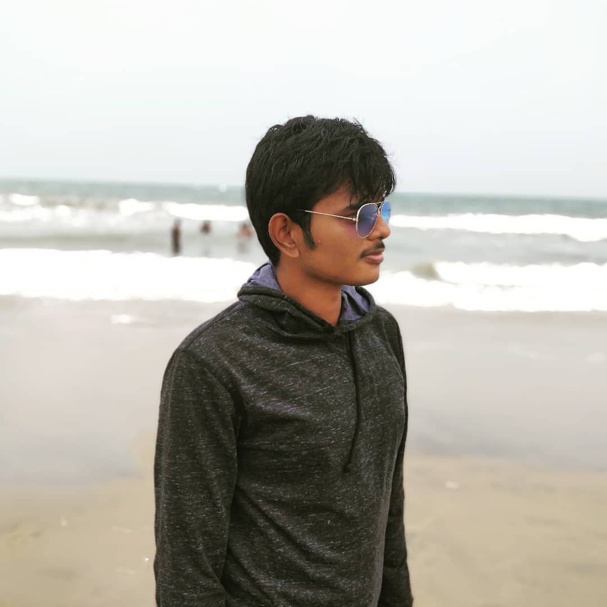

About Me

Mohamed Saseek Azmi Software Developer @ TCS
I have been writing new codes, debugging and fixing multiple issues in banking application software for the last three years. Recently, I have started to learn web development tools and technologies and build web apps in public to enhance my web development skills. I have plans to write blogs on this site in future. Please check after some time for further updates.